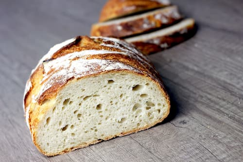

Braås Lantbröd
55 kr
Ett klassiskt ljust surdegsbröd på ekologiskt siktat vetemjöl och en nypa fullkornsdinkel. Mild syra och segt inkråm.
Innehåll: Vetemjöl, dinkelmjöl, vatten, havssalt, surdegskultur.
Allt vårt bröd och fikabröd bakas för hand på stenmalet ekologiskt mjöl.
Våra surdegsbröd jäser långsamt under 24 timmar och gräddas på stenhäll i hög temperatur för att få en kraftig, knaprig skorpa och ett saftigt inkråm.

55 kr
Ett klassiskt ljust surdegsbröd på ekologiskt siktat vetemjöl och en nypa fullkornsdinkel. Mild syra och segt inkråm.
Innehåll: Vetemjöl, dinkelmjöl, vatten, havssalt, surdegskultur.
60 kr
Ett saftigt fullkornsbröd packat med skållade rågkärnor, solrosfrön och linfrön. Lång hållbarhet och kraftfull smak.
Innehåll: Grovt rågmjöl, rågkärnor, solrosfrön, linfrön, vatten, salt.
65 kr
Ett runt surdegsbröd berikat med rikligt av rostade valnötter och en touch av lokal honung.
Innehåll: Vetemjöl, valnötter, honung, havssalt, surdegskultur.